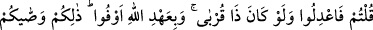
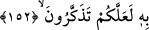

kıymaktır.
Bu, on hükümden beşincisidir. Adam öldürmekte, Hakk’ın emrine tazîmi ve
yarattıklarına şefkati terk vardır. Oysa bu ikisi, dinin temelleridir.
Buradaki işârî mana şöyledir: Haklı olarak öldürmek, Hakk’ı taleb uğrunda
öldürmektir. Allah yolunda öldürülen ise Rabbinin katında diridir.
Ebû Said Harrâz’ın şöyle dediği nakledilmiştir: Mekke’de iken bir gün Benû Şeybe
kapısından geçtim. Güzel yüzlü bir gencin vefat edip yerde uzandığını gördüm. Yüzüne
baktım, genç bana gülümsedi ve şöyle dedi: “Ey Ebû Said, bilmez misin ki, Allah’ı
sevenler ölseler de diridirler. Onlar ancak bir diyardan başkasına nakledilirler.”
Öldüklerinde gönül ehlinin imdadından ümit kesme
Çünkü gönül ehlinin ölümü, aynen uyanıklık gibidir
“Düşünesiniz” yani, nefislerinizi kavrayan ve onları zikredilen çirkinliklere teşebbüs
etmekten alıkoyan aklınızı kullanasınız “diye Allah size bunları” zikredilen beş
mükellefiyeti “tavsiye etti.” Rabb’iniz tekidle bunlara riâyet etmenizi size emretti.
152. Rüşd çağına erişinceye kadar, yetimin malına, sadece en iyi tutumla yaklaşın.
Ölçü ve tartıyı adaletle yapın. Biz herkese ancak gücünün yettiği kadarını
yükleriz. Söz söylediğiniz zaman, yakınlarınız dahi olsa adaletli olun, Allah’a
verdiğiniz sözü tutun. İşte Allah size, iyice düşünesiniz diye bunları emretti.
6. “Ergenlik çağına gelinceye kadar yetimin malına en güzel biçimde” korumak ya
da nemalandırmak gibi yapılabileceklerin en iyisini yapmak şeklinde “olanın dışında
yaklaşmayın.” Hiçbir suretle onun malını haksız yere harcamaya kalkmayın. Yetimin
malına göz dikmeyin.
Yetim, insanlarda babası olmayana, hayvanlarda ise annesi olmayana denir. Buradaki
hitap, yetimlerin velîlerine ve vâsîlerinedir.
Âyette sanki şöyle buyurulmaktadır: Yetim, bâliğ ve reşid olana kadar malını
muhafaza ediniz. Bâliğ olduğu vakit malını kendisine teslim ediniz.
Ebu Hanife, rüşdüne ermenin en üst sınırını 25 yaş olarak tesbit etmiştir. Eğer aklî
dengesi bozuk değilse 25 yaşına ulaştığı vakit artık malı kendisine teslim edilmelidir.
Cevherî der ki: “Ergenlik çağına erişinceye kadar” ifadesi ile kastedilen yetimin